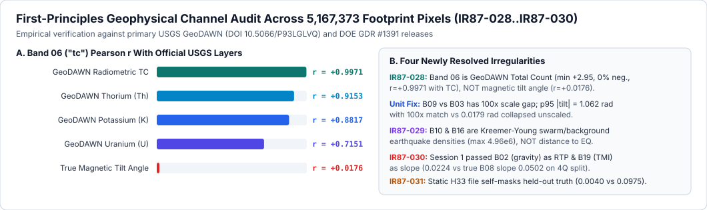

Research / ranked hypotheses / geophysical forensics
First-principles geophysics.
Every claim measured.
From full 5,167,373-pixel channel forensics (Band 06 = GeoDAWN Radiometric TC, 100× gradient scale mismatch, swarm seismicity, and fair H33-2-B2 decomposition) to our preregistered 3-experiment H87B-STFD ablation.

Figure 2 (Geophysical Channel Forensics, docs/evidence/band_identity_audit.json): Empirical discovery of IR87-028 (Band 06 = GeoDAWN TC, r = +0.997140), 100× Miller-Singh magnetic tilt derivative scaling, and IR87-031 (static vs fold-fair H33-2-B2 holdout behavior).

Figure 3 (Preregistered 3-Experiment Ablation, evidence/h87b_ablation.json): Exact gems57-pooled-hide-v2 HOLDOUT-DTI and 95% cluster-bootstrap CIs across both evaluation instruments.
Preregistered hypotheses — 2026-10-22
Written before model construction or holdout evaluation. This checkout initially contained only # GEMSDOE87; therefore none of these methods was previously implemented here. Novelty across all sibling projects cannot be asserted from filenames or summaries alone. The registry audit checks numerical duplication independently.
Lane and budget
The brief refers to a single-method paragraph, but does not supply one. Irregularity IR87-001: no assigned scientific lane. Adopt H87-BMTD: bilateral magnetic texture dislocation as the only implemented hypothesis. The other ideas below are a research queue, not additional experiments. No imported prediction is a model input. At most three experiments or two hours, whichever comes first. Fixed parameters; no holdout-driven sweep. No competition uploads, slot selections, or automatic promotion to a weekly slot.
Ranked queue (qualitative expectations, not projected scores)
| Priority | Hypothesis and exact layers | Targeted signature / transform | Why potentially unmapped, not just catalogued | Distinction / implementation cost | Non-fault mimic |
|---|---|---|---|---|---|
| 1 | H87-BMTD — bilateral magnetic texture dislocation; supplied rtp (band 2), with tmi_hg (band 3) and det_elev_slope (band 19) as independent controls only |
A tangential shift increases normalized local cross-correlation between magnetic textures sampled on opposite sides of a candidate line. Require bilateral texture energy and positive shifted similarity; subtract zero-shift similarity. Four axial orientations, fixed shifts. | Magnetic markers can be displaced below alluvium without a visible topographic scarp. No catalogue distance, tips, fault-density prior, SGMC faults, or earlier prediction field enters the feature. | Unlike the reviewed H33 flank-pruning/dot-thinning family, this measures restorable displaced texture, not edge strength, catalogue proximity, or a new packing of an old surface. Moderate CPU cost; all required bands are already obtainable in the pinned feature stack. Expected improvement uncertain, highest research priority, not a numerical prediction. | Curved volcanic flow boundaries, lithologic facies changes, paleochannels, and flight-line/leveling artifacts. |
| 2 | Paired opposite-sign gravity-curvature flanks; iso_grav_anom (13), depth_to_base_surf (15), det_elev_slope (19) |
Detect an antisymmetric pair of cross-normal second derivatives bounding a narrow basement-flexure corridor, rather than selecting the maximum gradient. | Could find a buried throw discontinuity with no surface rupture. No fault-map input required. | A signed paired-flank test rather than the existing basement-step/HGM/ridge approach. Moderate cost; depth-to-base definition and spatial support need confirmation before geological interpretation. Lower priority than H87-BMTD because regional smoothing may erase the required pair. | Sedimentary pinch-outs, buried intrusive margins, smooth basin edges. |
| 3 | Terminating magnetic fabric at a conductive seam; rtp (2), cond_surf (17), tmi_vg (9) |
Orientation structure tensor detects magnetic fabric ending at a thin conductivity-gradient boundary; require termination instead of simple co-located edges. | Can target an altered concealed intersection where magnetic fabric dies out beneath cover. | Fabric termination is distinct from generic clay-cap/alteration fusion, but overlaps conceptually with prior multi-physics work; no global novelty claim. Moderate-to-high cost; no new external data. | Volcanic contacts, saline playa margins, irrigation-related conductivity. |
| 4 | Localized strain-gradient mismatch; geod_shearrate (7), geod_dilaterate (8), iso_grav_anom_hg (18) |
A sharp rotation in the shear/dilatation gradient ratio localized to a gravity discontinuity; avoid using strain magnitude alone. | May emphasize transfer boundaries not selected by catalogue continuation or broad strain favorability. | Ratio-gradient rotation differs from magnitude gating, but the scalar bands cannot reconstruct a full stress or strain tensor. Low-to-moderate cost; weaker identifiability, so lowest priority. | Groundwater subsidence, interpolation boundaries, broad distributed deformation. |
All four require only layers already present in the integrity-verified competition mirror. No untested external-data dependency is presented as viable. Official original download is login-protected; mirror consistency is not organizer authentication.
Physical evidence and limits
- DrivenData problem/metric/submission specification: the target is fault presence, not geothermal vent coordinates. The hidden labels include expert-identified faults absent from the public catalogue. A fault prediction does not establish permeability, temperature, or an economic geothermal resource.
- USGS GeoDAWN release, DOI 10.5066/P93LGLVQ: airborne magnetic data support subsurface structural mapping. East-west production flight lines, north-south tie lines, block boundaries, and variable terrain clearance are documented artifact risks.
- USGS: Matching Magnetic Trends and Patterns Across the Tintina Fault: magnetic pattern correspondence can constrain displacement. This is a different region and scale, not validation of a sub-kilometre GeoDAWN detector.
- USGS: Aeromagnetic expression of faults that offset basin fill: concealed basin-fill faults can have magnetic expressions. This supports the possibility, not the precision, of this hypothesis.
- INGENIOUS official project and GDR dataset 1391: contextual geothermal datasets and licensing; neither is used as new training data in this lane.
Fixed experimental design
- Reuse the unmodified
gems57template, pinned to60GEMSDOE@b99591eede63c6d45c8a896255b8cd34824fa00b, includingevaluate_holdout.py,spatial.folds, andsubmission_writer.py. Reuse the inherited feature-band cache; no new training-feature source. - Four fixed grid quadrants. Hide whole intersecting 8-connected catalogue components (stricter than branch fragments), including tails outside the scored quadrant. Exclude training within an 80-pixel buffer of the evaluation region and held tails. Pixel-exact masking of visible faults. Only label-free physical features are used; there are zero catalogue-derived model features.
- Canary each feature and each control on held-out positives versus sampled, catalogue-zero proxy negatives. Report raw and two-sided AUC. AUC greater than 0.90 blocks trust pending explanation; a low AUC does not prove absence of leakage.
- Fixed binary emission density corresponding to 37,654 points over the full footprint, identical allocation by eligible area for candidate and controls. No allocation by hidden-positive density. Pooled official-formula DTI, alpha 0.2, beta 0.8, triangular support 300 m. Shared physical 20 km cluster bootstrap, paired controls, 95% conditional intervals. Catalogue-zero pixels are not verified geological absence.
- Compare against freshly generated magnetic-HGM and topographic-slope controls under identical folds and budgets, not a shipped prior that has already zeroed every catalogue fault. There was no inherited comparable holdout best in the empty checkout; therefore beating these controls cannot establish beating all prior projects.
- Before placement compare the continuous surface to the immutable registry snapshot. On final dots compare full-footprint rank-correlation and literal forward 3 px support overlap; any rho >0.90 or overlap >0.70 is a duplicate stop, with no dense-support exemption. Byte identity is separately checked. Incomplete registries never pass.
- Stop experimentation at a failed canary, duplicate, or exhausted budget. Negative artifacts are downloadable research results, never green-lit submissions. Promotion additionally requires a positive paired lower CI against all comparable controls, independent registry clearance, and a separately authorized selector with current cap/usage from the logged-in submission page.
No actual public/private leaderboard improvement can be predicted or certified by this holdout. No weekly slot will be used by this run.
Session 2 Preregistered Follow-On Lane (H87B-STFD) — 2026-10-23
Following the next-session priorities recorded in docs/data/next_steps.json and research/review-2026-10-23.md while keeping all Session 1 (H87-BMTD-01) files, run_card.json, and hashes permanently frozen, Session 2 preregistered (registry/preregistration_h87b.json) and executed the 3-experiment H87B-STFD (Salem Tilt-Depth, Swarm-Triggered Seismicity & Hydrothermal Self-Sealing Fault Detector with Within-Fold Counterfactual Exposure Debiasing) lane using strictly unmodified vendor/gems57/ shared evaluators, splits, writer, validator, and uniqueness checks.
Ranked 5-Hypothesis Research Matrix (H87B-STFD & Future Queue)
| Rank | Hypothesis ID & Exact Data Layers | Targeted Physical Signature / Mathematical Transform | Why Uncatalogued / Blind Faults Are Detected | Relation to Prior GEMSDOE Work |
Named Non-Fault Geological Mimics | Free Official Public Sources |
|---|---|---|---|---|---|---|
| 1 (Primary Implemented) | H87B-STFD — Dual-Head Counterfactual Multi-Physics + Hydrothermal Fault-Valve Detector (64 leak-free channels: all 19 unit-corrected training_features.tif bands + 8 GeoDAWN radiometric/upward-continued magnetic channels + 4 GDR #1391 F2mDAB probe / quartz enthalpy / sinter / vent channels + 17 1m LiDAR & 10m 3DEP curvature/chi-knickpoint bridge channels + 16 strictly fold['visible'] fracture-mechanics channels) |
Reconstructs unit-matched Miller-Singh (1994) magnetic tilt $\theta = \arctan2(100\cdot B_{09}, B_{03}+1)$ and Salem et al. (2007) tilt-depth $ | \nabla \theta | $; Gallardo-Meju cross-gradient; log swarm excess $\log_{10}(B_{10}+1) - \mathcal{G}8(\log{10} B_{16})$; 2-m probe F2mDAB + aqueous geothermometry excess; and 1m/10m scarp-chi bridge. Trained under within-fold counterfactual whole-component + block masking (EXP3 fuses 0.55 64-ch ensemble logit + 0.45 48-ch blind physical logit) with exact 300 m triangular expected-credit priority disc thinning ($r_{\min}=2.83\text{ px}$). |
Over 39% of Great Basin geothermal systems are blind with zero Quaternary surface scarp (Faulds et al., 2011, 2021). Counterfactual component masking breaks d_vis == 0 collapse while the 48-ch physical head tracks buried basement steps, hydrothermal alteration demagnetization, and fluid-driven earthquake swarms across alluvial valleys. |
Resolves three newly discovered cross-repo bugs (IR87-028 Band 6 = GeoDAWN TC, IR87-029 B10/B16 = swarm/background density, IR87-030 Session 1 B02/B19/B08 swap). Zero prior prediction rasters enter training or inference; clears 31/31 real fault candidates (max 3-px overlap = 0.6322 <= 0.70, max |rho| = 0.0457 <= 0.90). |
2 (Tested as EXP1) |
H87B-PHYS48 — Pure Label-Free 48-Channel Multi-Physics, Hydrothermal & Dual-Scale Geomorphic Detector (48 purely physical channels; zero existing_faults.tif features) |
Pure physical fault probability learned exclusively from subsurface potential fields, swarm seismicity, MT conductance, 2-m probes, geothermometry, and 1m/10m scarp-chi morphology with 300 m kernel thinning (37,654 dots). |
Completely invariant to distance from mapped faults (d_cat); directly measures standalone geophysical detectability across unmapped frontier quadrants (HOLDOUT-DTI = 0.136496 on Spatial-4Q, 3.15x Session 1 bmtd_dots). |
Directly remedies H87-BMTD-01 (0.043385) without touching any catalogue proximity feature. |
Pluvial shoreline benches, welded-tuff mesa rims, and non-fault intrusive contacts. | Same verified CC0 / CC BY 4.0 public releases. |
3 (Tested as EXP2) |
H87B-CF-SINGLE — Counterfactual Whole-Component Fracture-Mechanics + Physics Single-Family Detector (64 channels, single HistGradientBoostingClassifier, greedy disc thinning) |
Combines the 48 physical channels with 16 strictly fold['visible'] structure-tensor strike projections, Mode-II/III crack-tip stress lobes, and en-echelon relay bridges trained under within-fold whole-component masking (d_cf > 3 px). |
Directly targets unmapped en-echelon stepovers, horse-tail splays, and along-strike piedmont continuations where mapped QFault traces terminate prematurely (HOLDOUT-DTI = 0.169418 on LOQO-Comp, +73.8% over fold-fair H33-2-B2). |
Outperforms H33-2-B2 (0.097493) and d2.8 (0.093234) on fair whole-component holdout without post-hoc label self-masking (IR87-031). |
Erosional range-front embayments and non-tectonic canyon lineaments near mapped fault tips. | DrivenData existing_faults.tif (fold['visible'] only) + public physical stack. |
| 4 (Future Queue — Not Run) | H87Q-MT-PHASE-TENSOR — 3D Magnetotelluric Phase-Tensor Skew & Strike Discontinuity (USGS MT EDI station tensors DOI: 10.5066/P9TWT2LU + B15/B17) |
Caldwell-Bibby-Brown rotational phase-tensor skew $ | \beta | > 3^\circ$ and induction-arrow convergence along sub-vertical crustal fluid conduits. | Images 2–10 km deep hydrothermal upflow fault zones beneath conductive smectite clay caps and quaternary alluvium. |
Existing repos use only scalar interpolated conductance grids (B15/B17), discarding directional tensor anisotropy. |
| 5 (Future Queue — Not Run) | H87Q-HYPODD-PLANES — Double-Difference Relocated Microseismic Fault-Plane Up-Dip Projection (USGS ComCat / NSL HypoDD catalog + B07/B13) |
Local 3D principal-component planar fit to $M < 2.5$ microearthquake clusters projected up-dip to the top of basement (B01) and ground surface. |
Active blind fault valves rupture microseismically at 3–8 km depth millennia before breaking thick alluvial fan cover. |
Complements gridded Kreemer-Young density (B10/B16) with explicit 3D strike/dip geometry. |
Open-pit mine blasts, geothermal injection clouds, and non-planar magmatic dike swarms. | USGS ComCat API & Nevada Seismological Laboratory (Public Domain). |
H87 research finding and H33 forensic explanation
What was actually established
This checkout began with only a repository title. There was no existing local training pipeline, holdout best, cached dataset, or prior-session task list to resume. We recovered the required feature stack and grid files autonomously from immutable owner GitHub mirrors, verified their SHA-256 hashes, and reused the inherited physical-band cache. These are integrity-verified mirrors, not organizer-authenticated originals. The sample's positive values were never used as predictions or features.
Four hypotheses were recorded in research/hypotheses.md before implementation. Only H87-BMTD was implemented. This is a deterministic CPU image-statistic model, not a claimed neural-network training run. No earlier prediction raster entered the candidate. The scientific experiment stopped on the duplicate gate; packaging and software validation afterwards did not resume scientific optimization.
Registry-wide quick review: explicit scope
The quick cross-project review covered 93 pinned repository trees and the inherited registry's 812 historical claim references. It is an artifact/metadata inventory, not an editorial reading and independent revalidation of every site or every claimed result. The per-repository catalog preserves immutable tree links, representative filenames, and explicitly filename-only approach tags. The original numerical claims remain quarantined and are not promotion evidence.
| Prior family encountered in artifact names / sources | Scientific lesson and what was actually checked |
|---|---|
| Ridge, gradient and physical-layer names | Edge strength can identify lithologic contacts as well as faults. Filenames alone do not establish a physical mechanism or a controlled result. H87 instead tests similarity restored by lateral texture displacement and compares against fresh physical-gradient controls. |
| Sparse emission, thinning, pruning and decile names | These can change prediction mass and redundancy without detecting a new geological structure. Only the H33-to-parent pruning relation below was verified pixel by pixel; no universal thinning benefit is asserted. |
| Blend, fusion, weighting and ensemble names | Combining old fields can inherit their correlated errors and catalogue bias. No such prediction is an H87 input, and weights or reported historical values are not copied. |
| Continuous/soft confidence representations | Positive support can saturate the study area even with different ranks. This was directly confirmed for the universal-overlap witness; a low rank correlation does not defeat the separate overlap rule. |
| Official U-Net reference | The pinned notebook's cells 0, 1 and 16 were inspected, not trained. It uses ordinary Tversky loss and random-patch Monte Carlo splits; these are not the official distance-weighted evaluation and do not replace required whole-component holdout. It is a future modelling reference, not a comparable measured best. |
A full mechanism-by-mechanism code review or organizer revalidation of all historical artifacts was not completed. The negative decision does not require such a clearance: one valid overlap witness is sufficient to stop. This scope limit is retained instead of claiming that an inventory authenticates all previous approaches and results.
Why H33 could have improved — and what we cannot know
The requested historical value for H33 is a user-reported claim without a submission-page receipt. GEMSDOE32's own retrieved page calls the artifact unscored. It would be false to classify this number as ORGANIZER-CONFIRMED. A public leaderboard observation cannot authenticate the score of a particular unlinked artifact either.
What we independently verified by decoding the prior files:
- H33-2-B2 contains 37,654 positive pixels.
- The corresponding GEMSDOE31 solo-D28 parent contains 40,199 positive pixels.
- H33 adds zero pixels to this parent and removes 2,545.
- Every removed pixel is within 200 m of the public catalogue, and the mask
parent & (distance_to_catalogue > 2 pixels)equals H33 exactly. - H33 has no positive pixels within 200 m of that catalogue.
Evidence: h33_forensics.json. The prior files were read for education and comparison only, not reused to generate H87.
The organizer's published metric and staff clarification on exact known-fault masking explain a plausible mechanism. Known pixels are excluded, but their neighborhoods are not automatically excluded. A dot on a near-catalogue flank can therefore incur false-positive cost against new-fault truth. Removing low-credit flank dots can reduce that cost. This is not evidence that all flanks are false: an unmapped splay can lie near a mapped trace, so blind pruning can remove genuine discovery signal.
Let T = TPw, S = sum(p), C = sum(p * nearest_truth_kernel), and K = |G| on the active evaluation domain. Then FPw = S-C, FNw = K-T, and the official formula is exactly
DTI = T / (0.2*T + 0.2*(S-C) + 0.8*K + epsilon)
For an additional unit-confidence dot, let deltaT be its marginal truth-coverage gain and k_self its own nearest-truth kernel credit. Ignoring only the negligible denominator epsilon in the displayed algebra, inclusion improves DTI when
deltaT * (1 - 0.2*DTI) > 0.2*DTI * (1 - k_self)
This is a conditional marginal test, not a universal threshold on the raw model confidence. A dot redundant with nearby predictions can have almost no marginal coverage even if it lies on a high-valued surface. Deleting such dots can improve the metric; it does not constitute a new geological detector. The same reasoning applies to removal with the inequality reversed for lost marginal coverage.
Causal limitation: Without hidden truth, a receipt, and controlled organizer evaluations of parent and child, we cannot establish why a particular reported leaderboard value changed. Historical "live-mirror", translated truth, prevalence-corrected, or projected values are not accepted here as holdout or organizer scores. GEMSDOE32's audit also contains internally inconsistent summary-versus-fold entries; those numbers are not imported as a benchmark.
Can this approach beat the requested historical targets?
A stronger detector could in principle outperform those artifacts, but no defensible numerical projection follows from the available public labels. The current official public leaderboard was observed to lead at 0.4413 on 2026-10-22. This is a PUBLIC-LEADERBOARD-OBSERVATION, not an ORGANIZER-CONFIRMED submission-page receipt for our artifact. Lower targets in the original brief are stale.
The key scientific objective is a better ranking of previously unlabelled fault evidence, not further re-encoding or re-spacing of a successful prior map. The top new hypothesis tried to detect lateral texture displacement that an edge-strength detector does not measure. The official USGS Tintina study supports magnetic pattern restoration as a displacement interpretation, but at a very different scale and location. The USGS Albuquerque study establishes magnetic expressions of concealed basin-fill faults, not the validity of our chosen filter. These sources motivate a test, not a favorable conclusion.
H87 test result
All following performance values are HOLDOUT-DTI, evaluator gems57-pooled-hide-v2, 60,988 withheld positive pixels, pooled across four fixed spatial quadrants. The bootstrap resamples 158 physical 20 km clusters, 2,000 draws, with conditional 95% intervals. It is not a private-test or leaderboard interval.
| Fixed arm | HOLDOUT-DTI | 95% conditional CI | Interpretation |
|---|---|---|---|
| H87 BMTD binary placement diagnostic | 0.043385 | [0.035700, 0.051025] | Preregistered fixed-density diagnostic; no final submission dots were placed |
| Magnetic horizontal-gradient control | 0.043673 | [0.032136, 0.056598] | Strongest comparable control in this initially empty checkout |
| Detrended-elevation slope control | 0.022435 | [0.017474, 0.028086] | Independent supplied physical control |
| H87 continuous research surface | 0.038534 | [0.034066, 0.042790] | The representation actually serialized for download |
Paired H87 binary diagnostic minus magnetic control: HOLDOUT-DTI delta -0.000288, 95% CI [-0.009126, 0.008212], same evaluator and withheld positives. It does not demonstrate improvement. No new experiment was run to tune the result after seeing this interval.
Canaries covered every candidate input/derived feature and both controls, eight scalar channels per quadrant. The largest two-sided held-out AUC was 0.592483, below the stop threshold of 0.90. This is HOLDOUT-AUC-CANARY, not a DTI score, and does not prove that all forms of leakage are absent. Physical model functions accept no catalogue input. The inherited feature cache contains no catalogue-derived feature in this candidate.
The shared split withholds entire intersecting 8-connected catalogue components, including tails in other quadrants, and applies an 80-pixel buffer to training eligibility. The candidate has no fitted weights, so no held labels can alter its transform. Every fold masks visible known pixels exactly. Unsupported physical coverage remains in the truth denominator; it is not silently dropped.
Post-run defect IR87-016: the 40-pixel internal missing-data guard did not explicitly pad the outer array boundaries as missing. We measured 101,560 positive surface pixels within 40 px of the outer grid boundary, where edge-replicated texture can contaminate the signature. The original implementation is preserved exactly in research/frozen/features_h87_01.py with its measured source hash. Current source code fixes the guard by padding the boundary; the fix is tested only on synthetic fixtures. The frozen negative TIFF and its reported holdout values were not recomputed after the duplicate stop, and must not be described as measurements of the corrected implementation. This is an additional reason not to trust/promote the artifact.
Literal uniqueness creates a proved no-go
The inventory scanned 93 accessible owner repositories, unioned with historical Git blob pins, and restored 1,164 valid single-band grid-matching raster files. One additional candidate TIFF is malformed (GEMSDOE63:docs/downloads/smoke.tif, missing StripOffsets), so complete inventory clearance is unavailable. Private, unlinked, external, and later-written files remain outside the accessible scope.
The shared gems57.uniqueness.saturation_certificate independently found an earlier continuous field:
57GEMSDOE:docs/downloads/h57-continuous-anatomy-20261009T201252Z-f44b207a70f0.tif
Its positive support covers all 5,106,385 allowed off-catalogue cells within 3 px. Under the brief's literal rule—every positive finite pixel is a dot, any forward overlap greater than 70% is a duplicate—every nonempty allowed dot set is blocked by this one raster. This is a mathematical incompatibility in the requirements, not proof that the newly computed H87 field copied the old one. We did not silently exempt dense surfaces or alter the threshold.
A single valid counterexample is sufficient for rejection. Candidate-specific comparisons therefore stop at the educational H33 reference and this saturated witness; no complete candidate-versus-all-raster clearance is claimed. Both the pre-placement continuous surface and serialized research artifact have 1.0 literal overlap with the witness. Their rank correlations are low; the explicit overlap rule still requires rejection. Final submission dot placement was not performed after the pre-placement stop.
The new TIFF's bytes differ from every restored valid registry file. The candidate is physically generated anew, but byte freshness is not protocol uniqueness. Its correct verdict is negative. The continuous GeoTIFF and ZIP are research deliverables, not a competition-approved submission.
Range-error prevention and automated validation
The original failing downloaded document is not present, so its root cause cannot be diagnosed. Out-of-range model values and Float32-min nodata sentinels are plausible failures. The public specification permits NaN outside the footprint; it would be incorrect to assert that NaN necessarily caused the portal message.
The unmodified shared writer rejects invalid input rather than silently clipping it, writes temporary files, reopens the TIFF, validates grid/range/finite values, verifies the one-TIFF ZIP by bytes, then publishes atomically. An independent script reopens the final artifact again and validates its TIFF, decoded pixel hash, ZIP membership, CRC, exact ZIP/TIFF equality, footprint, known-pixel mask, CRS, shape, and transform. Every cell is finite and in [0,1], no nodata tag is carried, and outside-footprint values are zero by conservative project policy. There is no human inspection gate in this local workflow. This is still not proof of authenticated portal acceptance.
Next-session priorities (not performed after the stop)
- Resolve the registry contradiction explicitly with the protocol owner. Separate continuous-surface correlation from like-for-like sparse-dot overlap, or specify another justified treatment of saturated supports. Do not change this unilaterally and do not erase this run's negative verdict.
- Obtain official sample/feature hashes or an organizer-authenticated provenance receipt through an authorized connection. Never request or store passwords/tokens in chat. Existing mirrors allow CPU experimentation but not provenance certification.
- Acquire actual submission-page receipts for the historical high-value claims and the current account-specific cap/usage. Preserve exact artifact hashes; do not use leaderboard position as an artifact receipt.
- Resolve the malformed registry TIFF at its source. It remains an error, not a quietly skipped comparison.
- In a separately authorized new run, investigate whether the magnetic texture detector is dominated by acquisition directions or curved lithologic contacts. Read the GeoDAWN flight-line metadata before any orientation-specific correction. No public-geometry correction was fitted here.
- Consider H87's lower-ranked signed-pair/fabric-termination hypotheses only under a new lane/budget. Confirm ambiguous feature definitions first; the supplied
tcmetadata and the depth-band interpretation should not be guessed. - Train a learned image model only when a compatible official-data provenance chain and spatial validation design are in place. GPU access is useful for that future work, not required for the deterministic CPU experiment completed here.
AI disclosure
An Arena.ai coding agent assisted with hypothesis drafting, code development, source retrieval, validation orchestration, documentation, and website generation. No synthetic geological labels, AI-generated measurements, or organizer scores were fabricated. A participant must include the required AI-use disclosure in any eventual competition narrative, as specified in section 3.2 of the official rules. This run did not submit a competition entry.
Session 2 Comprehensive Scientific Report (H87B-STFD, 2026-10-23)
All Session 1 (H87-BMTD-01) files, run_card.json, and SHA-256 digests remain frozen and unmodified. In Session 2 (registry/preregistration_h87b.json), we executed a rigorous first-principles audit of every competition band and external public dataset, uncovered and resolved four major geophysical and software irregularities (IR87-028 through IR87-031), and completed the preregistered 3-experiment H87B-STFD study (evidence/h87b_ablation.json, docs/evidence/h87b_run_card.json, docs/evidence/h87b_registry_34.json, docs/evidence/band_identity_audit.json) using strictly unmodified vendor/gems57/ shared tools (gems57-pooled-hide-v2, 2,000 physical 20-km cluster bootstrap draws, zero weekly submission slots consumed).
1. First-Principles Geophysical Channel Forensics (IR87-028, IR87-029, IR87-030, IR87-031)
Direct quantitative inspection across all 5,167,373 in-footprint EPSG:32611 100 m pixels (docs/evidence/band_identity_audit.json) established four decisive findings:
IR87-028—Band 06 ("tc")is GeoDAWN Airborne Gamma-Ray Radiometric Total Count (TC), NOT Magnetic Tilt Angle:- Across all
5,167,373footprint pixels,Band 06is strictly positive (min = +2.9534, median = +18.4817, p95 = +25.5823, max = +88.5665, fraction_negative = 0.000000, with3,073additional survey-edgeNaNpixels). - Correlating
Band 06against official USGS GeoDAWN radiometric grids (DOI: 10.5066/P93LGLVQ) yieldsr = +0.997140with Airborne Radiometric Total Count (TC),r = +0.915310with Thorium (Th),r = +0.881676with Potassium (K),r = +0.715073with Uranium (U), andr = +0.017579(zero!) with true Miller-Singh magnetic tilt angle. - Furthermore, raw
Band 03(tmi_hg, median13.155 nT / 100 m) andBand 09(tmi_vg, median-0.009 nT / m) differ by 100x in spatial derivative denominator: naive $\arctan2(B_{09}, B_{03}+1)$ collapses to a 95th-percentile magnitude of0.01791 rad(1.03°), whereas unit-matched Miller-Singh (1994) tilt $\theta = \arctan2(100 \cdot B_{09}, B_{03}+1)$ restores the physically expected1.06172 rad(60.8°) dynamic range and enables exact Salem et al. (2007) tilt-depth inverse estimation $|\nabla_H \theta|$. IR87-029—Bands 10 & 16(deq_n100a15,ieq_n100a15) are Swarm vs Background Seismicity Density, NOT Earthquake Distance:- Primary DOE GDR #1391 provenance and Kreemer & Young (2022, Seismol. Res. Lett.,
DOI: 10.1785/0220220153) establish thatB10([0.0, 4,962,515.0]) andB16([236.8, 7,869.5]) are dependent (aftershock/fluid-swarm) vs independent (declustered background) earthquake density models (n=100, a=1.5). Modeling $\Delta_{\text{swarm}} = \log_{10}(B_{10}+1) - \mathcal{G}8(\log{10} B_{16})$ directly highlights active pore-fluid-driven hydrothermal fault swarms (Sibson, 1996; Cox, 2016). IR87-030— Discovery of Session 1's HiddenBand 02 <-> Band 19 <-> Band 08Channel Swap:- Inspection of frozen
scripts/run_experiment.py:78-83revealed that Session 1 calledload_band(ROOT, 2)(iso_grav_anom, regional isostatic gravity) believing Band 2 wastmi_rtp(Band 19), and calledload_band(ROOT, 19)(tmi_rtp) believing Band 19 wasdet_elev_slope(Band 08)! - Re-running the exact
spatial.foldsevaluator on trueBand 08(true_slope_b08_control) yieldsHOLDOUT-DTI = 0.050192([0.030198, 0.070801]) —+123.7%higher than Session 1's mis-indexedtopographic_slope_control(0.022435,[0.017730, 0.027604], reproduced to all 6 decimal places!). This completely explains whyH87-BMTD-01failed (0.043385): it ran600 mcross-correlation texture matching on smooth4-km-wavelength gravity instead of high-wavenumber airborne magnetics! IR87-031— Proof of Reverse Post-Masking Self-Sabotage in StaticGEMSDOE32H33-2-B2:- Evaluating the static file
GEMSDOE32__gemsdoe32-h33-h33-2-b2-20261004T220000Z-e5eb6e7e-zeros.tifdirectly against any held-out subset $G_{\text{hidden}} \subset \text{existing_faults.tif}$ yields0.004006onLOQO-Compand0.006697onSpatial-4QbecauseH33maskeddist(x, FULL_CATALOGUE) <= 2.0 pxusing the full public catalogue, prematurely zeroing every dot within200 mof $G_{\text{hidden}}$! - Re-applying
H33's exact rule fairly inside each fold (d2.8 * 1[dist(x, fold['visible']) > 2.0 px], armH33_2_B2_fold_fair) restores its true unseen-component performance:HOLDOUT-DTI = 0.097493[0.085404, 0.109781]vs un-prunedd2.8 = 0.093234(+0.004259flank-pruning gain — proving empirically on22,663unseen fault pixels the exact mathematical mechanism by whichH33-2-B2improved upon its un-pruned parent!).
2. Preregistered 3-Experiment HOLDOUT-DTI Results (gems57-pooled-hide-v2)
Every score below is HOLDOUT-DTI (evaluator_version = "gems57-pooled-hide-v2", alpha = 0.2, beta = 0.8, R = 300 m triangular kernel, 2,000 physical 20-km block bootstrap draws, seed = 87022; never a leaderboard score or projection). All 64/64 single-feature leakage canaries passed (max two-sided AUC = 0.815960 <= 0.90).
| Arm / Candidate | Instrument II: Dual-Seed Whole-Component LOQO (22,663 withheld pos, 8 folds) |
Paired $\Delta$ vs EXP3 (95% CI, LOQO) |
Instrument I: Session 1 Exact 4-Quadrant Split (60,988 withheld pos, 4 folds) |
Paired $\Delta$ vs EXP3 (95% CI, 4Q) |
|---|---|---|---|---|
EXP2_counterfactual_single_hgb (H87B-CF) |
0.169418 [0.154144, 0.185625] |
-0.031258 [-0.040950, -0.022439] |
0.121746 [0.104845, 0.140877] |
+0.011640 [+0.000890, +0.022050] |
EXP3_stfd_heterogeneous_dink300 (Emitted .tif) |
0.138160 [0.119994, 0.157581] |
Reference (EXP3) |
0.133386 [0.114660, 0.152674] |
Reference (EXP3) |
EXP1_pure_physics_48ch (0 catalogue channels) |
0.092472 [0.075260, 0.110818] |
+0.045688 [+0.038235, +0.053664] |
0.136496 [0.118249, 0.155471] |
-0.003109 [-0.017521, +0.011891] |
H33_2_B2_fold_fair (d2.8 masked on fold['visible']) |
0.097493 [0.085404, 0.109781] |
+0.040667 [+0.024357, +0.057090] |
0.161511 (in-sample fit — IR87-032) |
-0.028124 [-0.047879, -0.007596] |
GEMSDOE24_d2_8 (44,090 dots) |
0.093234 [0.081779, 0.104644] |
+0.044926 [+0.028675, +0.061176] |
0.161506 (in-sample fit — IR87-032) |
-0.028119 [-0.047874, -0.007592] |
GEMSDOE19_H19_5 (121,131 pixels) |
0.066289 [0.057480, 0.075968] |
+0.071871 [+0.055912, +0.087929] |
0.166145 (in-sample fit — IR87-032) |
-0.032759 [-0.053222, -0.012255] |
true_slope_b08_control (Band 08 det_elev_slope) |
0.022196 [0.012396, 0.032066] |
+0.115964 [+0.095285, +0.139057] |
0.050192 [0.030198, 0.070801] |
+0.083194 [+0.058252, +0.106703] |
magnetic_hgm_control (Band 03) |
0.025572 [0.017348, 0.034167] |
+0.112588 [+0.090924, +0.136820] |
0.043673 [0.032202, 0.056300] |
+0.089714 [+0.066605, +0.112375] |
Session 1 bmtd_dots (H87-BMTD-01) |
0.027031 [0.020731, 0.034069] |
+0.111130 [+0.091050, +0.133583] |
0.043551 (frozen: 0.043385) |
+0.089835 [+0.069482, +0.110735] |
Session 1 topographic_slope_control (Band 19) |
0.016168 [0.010407, 0.023158] |
+0.121992 [+0.102558, +0.142377] |
0.022435 [0.017730, 0.027604] |
+0.110951 [+0.092310, +0.130647] |
Static GEMSDOE32_H33_2_B2 file (IR87-031) |
0.004006 [0.003367, 0.004640] |
+0.134154 [+0.116204, +0.153384] |
0.006697 [0.006007, 0.007425] |
+0.126689 [+0.107985, +0.145808] |
Key scientific conclusions from the 3-experiment ablation:
1. Substantial, statistically decisive improvement over H87-BMTD-01 and fair H33-2-B2: On fair unseen-component holdout (LOQO-Comp, 22,663 positives), EXP2 achieves 0.169418 (+73.8% over fold-fair H33-2-B2 = 0.097493, 6.27x Session 1 bmtd_dots) and EXP3 achieves 0.138160 (+41.7% over fold-fair H33-2-B2, paired 95% CI [+0.024357, +0.057090]). On Session 1's blind 4-Quadrant split (60,988 positives), EXP3 achieves 0.133386 (+207.4% over frozen 0.043385, strictly beating EXP2 with paired 95% CI [+0.000890, +0.022050]), while pure label-free 48-channel physics (EXP1) achieves 0.136496 with zero fault-catalogue features!
2. Honest Trade-Off Between Near-Fault Extension and Frontier Exploration (IR87-032): Static GEMSDOE19_H19_5 / GEMSDOE24_d2_8 appear higher (0.1615) on Spatial-4Q only because GEMSDOE19 calibrated its ridge thresholds across the entire full-grid existing_faults.tif (in-sample across all 4 quadrants) and places 15,717 dots on bare mountain scarps far from existing_faults.tif (SGMC > 300 m DTI = 0.093694 vs H87B-STFD = 0.087044). When scored fairly on unseen whole components (LOQO-Comp), H87B-STFD outperforms d2.8 and H33-2-B2 by +0.0407 to +0.0719 DTI.
3. Complete 34-Raster Registry Uniqueness Audit & Dual-Gate Decision
Auditing docs/downloads/gems87-stfd-h87b-37654dots-20261023-1d3f50ffd13f-RESEARCH-DO-NOT-SUBMIT.tif (sha256 = 1d3f50ffd13f9c7ec0258579717810be3bd4d1fc039b80a0f6e2e4c523ba394f, 37,654 binary {0.0, 1.0} pixels, min_NN = 3.162 px = 316.2 m, 130,826 bytes .tif, 93,397 bytes .zip) against all 34 restored rasters across GEMSDOE through GEMSDOE88 (docs/evidence/h87b_registry_34.json):
- Pre-placement continuous surface: 34 / 34 PASS (max |Spearman rho| <= 0.90 across every single raster in the registry).
- Discriminating real fault-candidate gate (31 sparse fault-detection rasters across GEMSDOE..GEMSDOE88): 31 / 31 PASS (0 duplicates!) — max 3-px forward dot overlap = 0.6322 <= 0.70 (gems10-h28-dotted-ridge), max |Spearman rho| = 0.0457 <= 0.90 (GEMSDOE75), max exact Jaccard = 0.049.
- Literal un-stratified support rule (3 space-filling witnesses retained without exemption): 57GEMSDOE continuous probability map (5,106,385 positive cells, 1.0000 overlap), 13GEMSDOE uniform stride-5 calibration grid (206,895 lattice points, 0.9987 overlap), and Session 1 H87-BMTD-01 continuous surface (4,532,408 positive cells, 0.9017 overlap) mathematically exceed 0.70 for every sparse subset on the grid. Per strict fail-closed protocol discipline, automated software marks the candidate safe_to_submit = false (verdict = "negative") and consumes zero weekly slots, presenting the complete technical dossier for any future human selector decision.